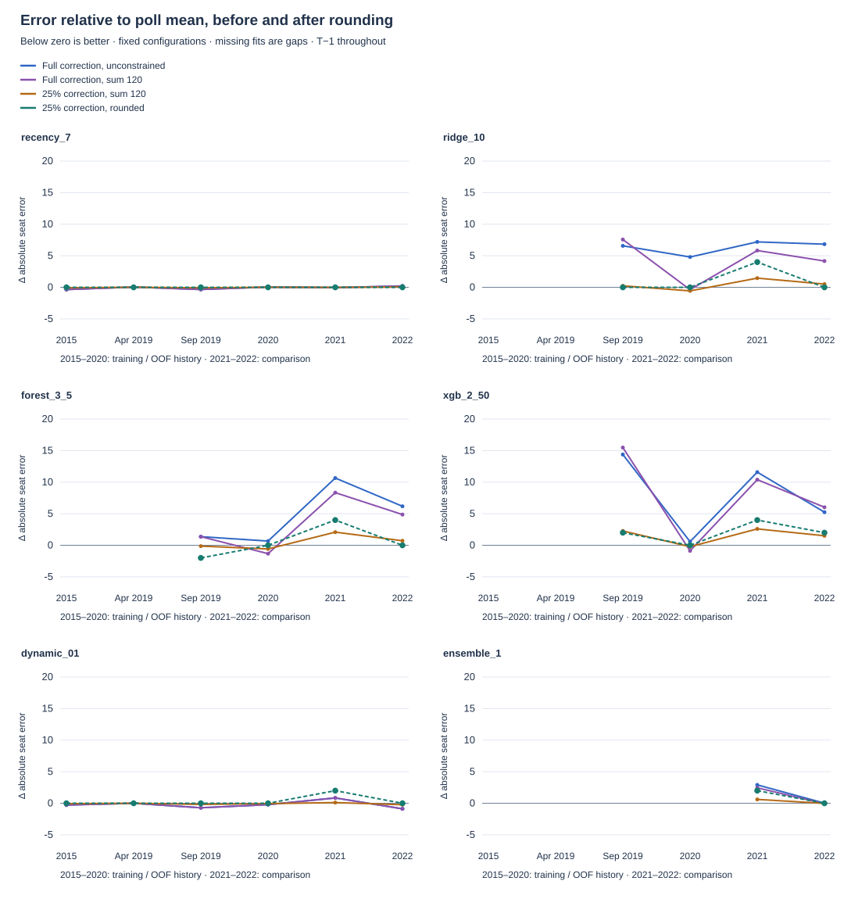
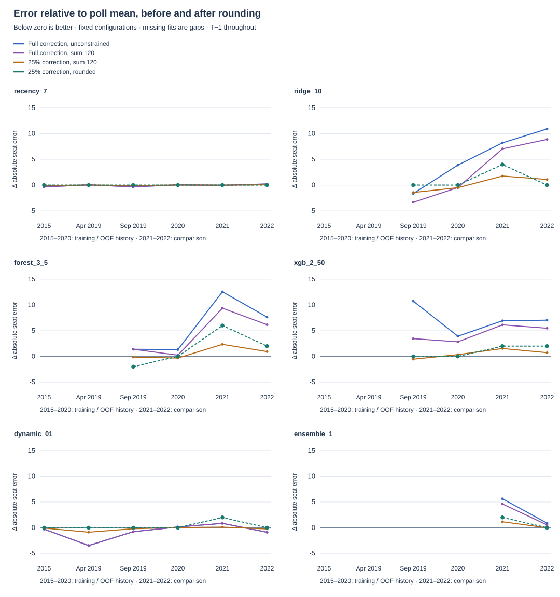
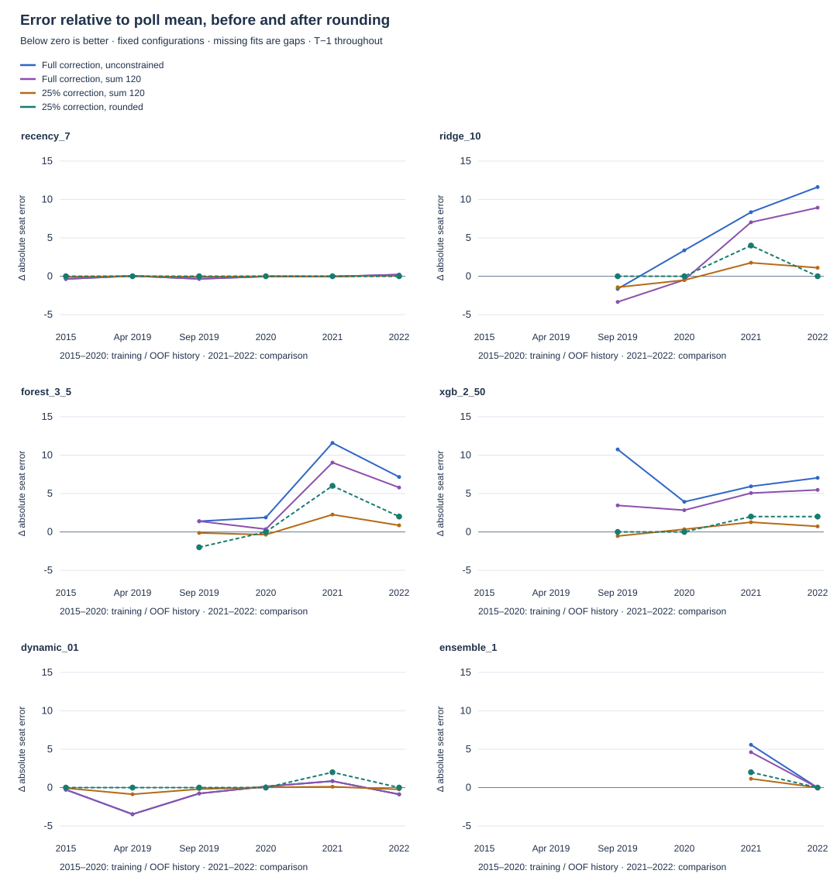

Three verified earlier releases; identical latest-group anchors, model settings, outcomes and forecast cutoffs. All four variants passed hosted tests and deterministic reruns. No final model selected.
The new history activates trends in three earlier campaigns. Results change, but no candidate beats the final 20/12 reference errors on 2021/2022. The combined data changes bring two ensemble configurations to a 2021 tie; some forests worsen.
Each panel shows a fixed configuration across eligible elections. Below zero improves the corresponding poll mean. Earlier folds have fewer training elections; missing fits remain gaps. These are inspected historical outcomes, not new blind tests.



Publication-age only · All stage scores · Full comparison table · Compact provenance and diagnostics
Verified hosted execution and full downloadable artifact. The artifact expires after30days; committed audit/code and compact results support reproduction.